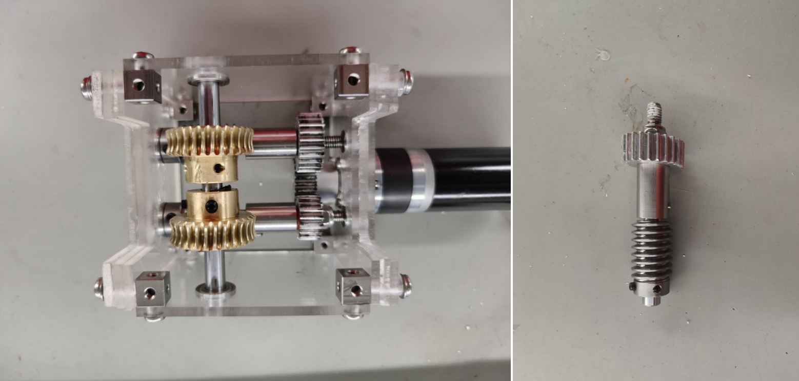

Shanghai Jiao Tong University · Research project · 2024–2025
Underactuated Three-Finger Gripper
A seven degree of freedom gripper designed to conform to objects during contact.

Contact sequence
The three-finger design allocates two joints to each finger and one degree of freedom to reconfigure the grasp. One motor drives both joints in a finger. When the middle segment stalls against the object, the transmission can disengage that segment and keep driving the tip, allowing the finger to wrap around the object.



My contribution
I designed and fabricated a compact cable tensioner for the upper segment. A left and right threaded lead screw moves two pulleys in opposite directions so cable tension can be adjusted from outside the finger housing.


Yiwen Gao, Juntong Zhou, Haoning Yu, and Ziyue Wang · Supervisor: Weixing Chen